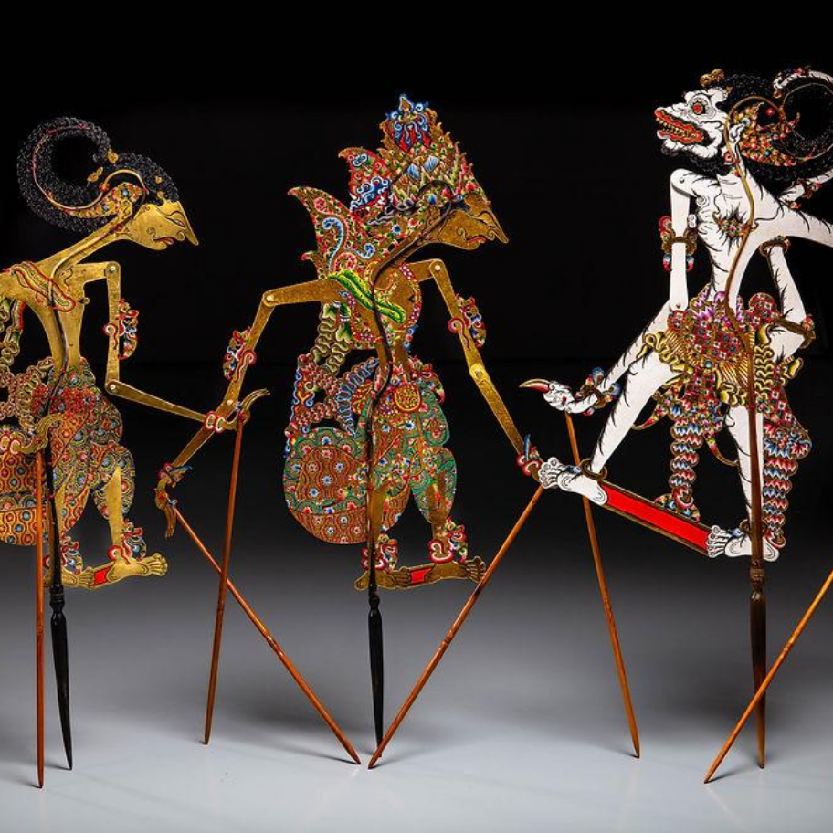
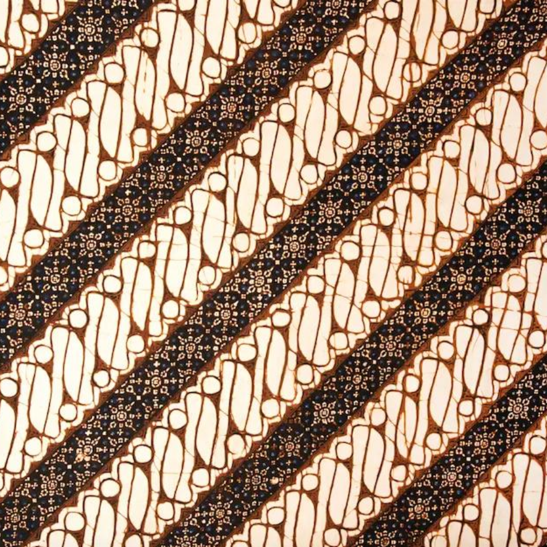
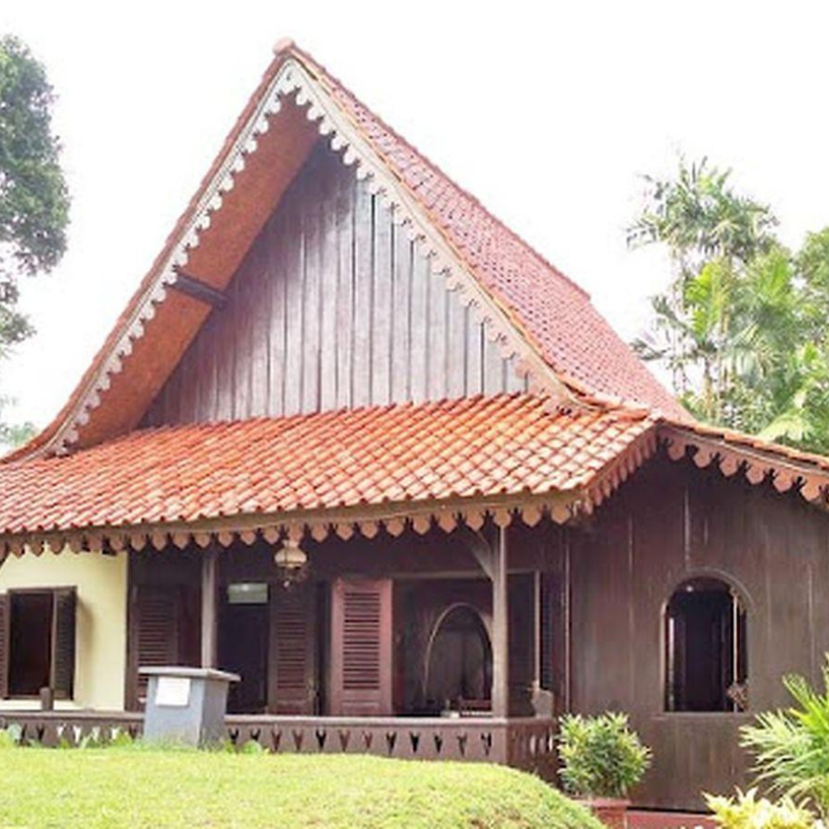
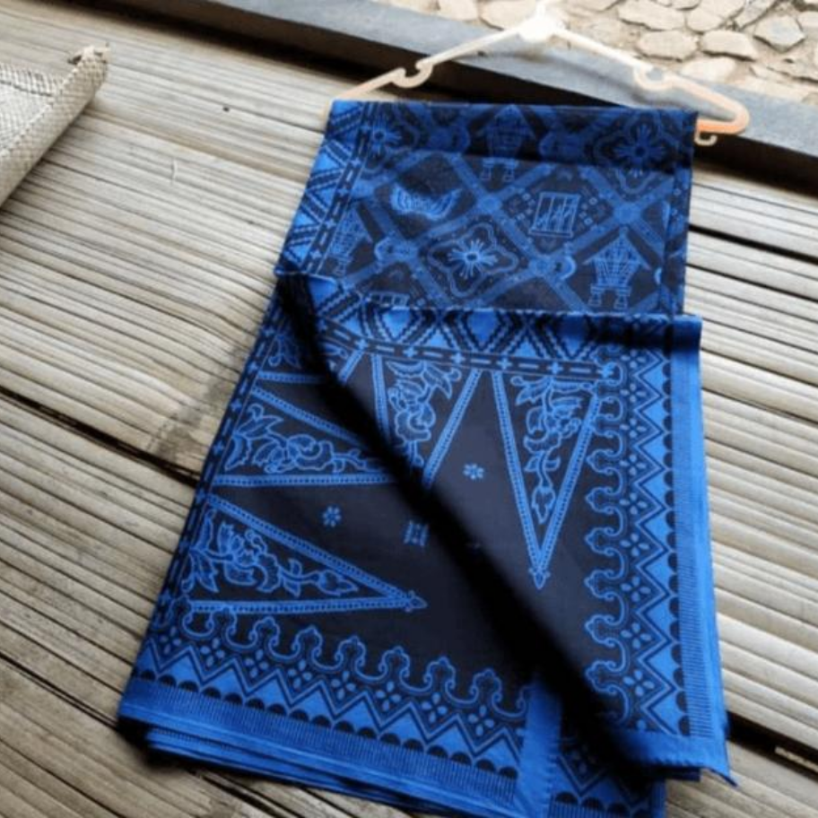

Megamendung Batik
Batik Megamendung is a traditional batik from Cirebon, West Java, recognized for its distinctive cloud patterns.
A curated collection of Indonesia's finest artistic expressions, from ancestral traditions to contemporary creations
Batik Megamendung is a traditional batik from Cirebon, West Java, recognized for its distinctive cloud patterns.

Intricately crafted leather puppets bring epic tales and moral teachings to life through shadow theatre.

Recognized by its rhythmic diagonal patterns, Batik Parang is a long-standing Javanese textile tradition.

A dramatic traditional performance known for its monumental Dadak Merak mask and energetic dance.

Traditional Betawi houses and ornamental details express local craftsmanship and cultural identity.

This landmark painting reinterprets historical capture through dramatic composition and expressive detail.

A traditional Sundanese musical instrument made from bamboo, producing harmonious tones through movement.

Handwoven textiles created by the Baduy community, recognized for deep connection to local customs.